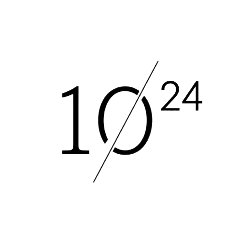

Web開発
要件整理、画面設計、DB/API設計、実装、改善まで一貫して対応します。

YottaByteServices
要件整理、画面設計、DB/API設計、実装、改善まで一貫して対応します。
日々の手作業や属人化した運用を、使い続けられる仕組みに変えます。
問い合わせ対応、文章生成、社内検索など、実務に合うAI機能を設計します。
作るべきもの、作らないものを整理し、事業に合う実装方針を一緒に決めます。
About
YottaByteは、世界中のデータを集めても達さない膨大な情報量を表す単位。 大きな構想を、社会に届くプロダクトへ。
Profile
 加藤
加藤
加藤獅
法人向けの受託開発やスタートアップ企業の技術顧問を務める。 高校在学中に医療AIを開発・運営し、2023年からSky Grid株式会社でAIエンジニアとしてSaaS開発に携わりました。
同年に開業し、現在はフリーランスエンジニアとしてWebアプリケーションの企画・要件定義、実装、保守運用までを一貫して支援。 kintoneを中心とした業務システム開発、既存プロダクトの品質改善、API保守、顧客フィードバックをもとにした改善対応も行っています。
開発だけで終わらせず、LP設計、広告運用、SNSグロースまで含めて、技術をビジネス成果につなげることを得意としています。
Contact
新規開発、改善、AI活用の相談に対応します。
raio20061114@gmail.com